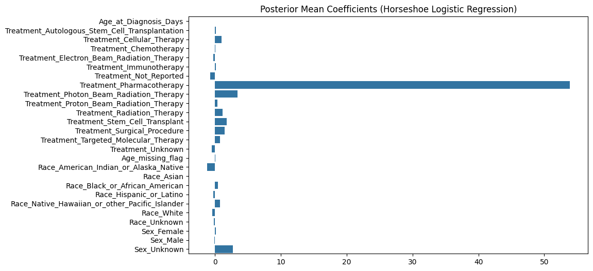
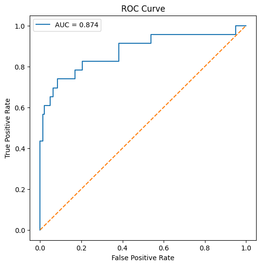
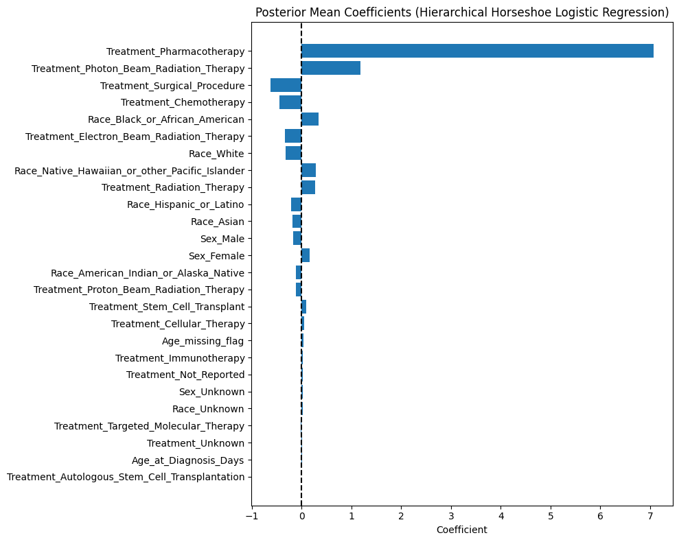
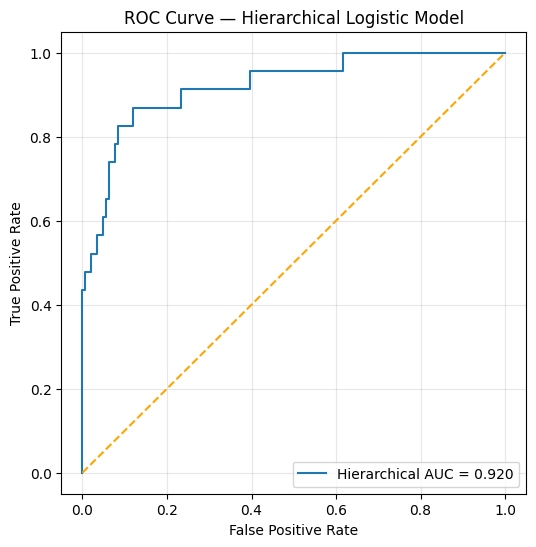

!pip uninstall -y aesara aesara-theano-fallback
!pip install numpy==1.26.4
!pip install pymc==5.13.1 pytensor arvizFound existing installation: aesara 2.9.4
Uninstalling aesara-2.9.4:
Successfully uninstalled aesara-2.9.4
Found existing installation: aesara-theano-fallback 0.1.0
Uninstalling aesara-theano-fallback-0.1.0:
Successfully uninstalled aesara-theano-fallback-0.1.0
Requirement already satisfied: numpy==1.26.4 in /usr/local/lib/python3.12/dist-packages (1.26.4)
Requirement already satisfied: pymc==5.13.1 in /usr/local/lib/python3.12/dist-packages (5.13.1)
Requirement already satisfied: pytensor in /usr/local/lib/python3.12/dist-packages (2.20.0)
Requirement already satisfied: arviz in /usr/local/lib/python3.12/dist-packages (0.22.0)
Requirement already satisfied: cachetools>=4.2.1 in /usr/local/lib/python3.12/dist-packages (from pymc==5.13.1) (6.2.2)
Requirement already satisfied: cloudpickle in /usr/local/lib/python3.12/dist-packages (from pymc==5.13.1) (3.1.2)
Requirement already satisfied: numpy>=1.15.0 in /usr/local/lib/python3.12/dist-packages (from pymc==5.13.1) (1.26.4)
Requirement already satisfied: pandas>=0.24.0 in /usr/local/lib/python3.12/dist-packages (from pymc==5.13.1) (2.2.2)
Requirement already satisfied: rich>=13.7.1 in /usr/local/lib/python3.12/dist-packages (from pymc==5.13.1) (13.9.4)
Requirement already satisfied: scipy>=1.4.1 in /usr/local/lib/python3.12/dist-packages (from pymc==5.13.1) (1.12.0)
Requirement already satisfied: typing-extensions>=3.7.4 in /usr/local/lib/python3.12/dist-packages (from pymc==5.13.1) (4.15.0)
Requirement already satisfied: setuptools>=48.0.0 in /usr/local/lib/python3.12/dist-packages (from pytensor) (75.2.0)
Requirement already satisfied: filelock in /usr/local/lib/python3.12/dist-packages (from pytensor) (3.20.0)
Requirement already satisfied: etuples in /usr/local/lib/python3.12/dist-packages (from pytensor) (0.3.10)
Requirement already satisfied: logical-unification in /usr/local/lib/python3.12/dist-packages (from pytensor) (0.4.7)
Requirement already satisfied: miniKanren in /usr/local/lib/python3.12/dist-packages (from pytensor) (1.0.5)
Requirement already satisfied: cons in /usr/local/lib/python3.12/dist-packages (from pytensor) (0.4.7)
Requirement already satisfied: matplotlib>=3.8 in /usr/local/lib/python3.12/dist-packages (from arviz) (3.10.0)
Requirement already satisfied: packaging in /usr/local/lib/python3.12/dist-packages (from arviz) (25.0)
Requirement already satisfied: xarray>=2023.7.0 in /usr/local/lib/python3.12/dist-packages (from arviz) (2025.11.0)
Requirement already satisfied: h5netcdf>=1.0.2 in /usr/local/lib/python3.12/dist-packages (from arviz) (1.7.3)
Requirement already satisfied: xarray-einstats>=0.3 in /usr/local/lib/python3.12/dist-packages (from arviz) (0.9.1)
Requirement already satisfied: h5py in /usr/local/lib/python3.12/dist-packages (from h5netcdf>=1.0.2->arviz) (3.15.1)
Requirement already satisfied: contourpy>=1.0.1 in /usr/local/lib/python3.12/dist-packages (from matplotlib>=3.8->arviz) (1.3.3)
Requirement already satisfied: cycler>=0.10 in /usr/local/lib/python3.12/dist-packages (from matplotlib>=3.8->arviz) (0.12.1)
Requirement already satisfied: fonttools>=4.22.0 in /usr/local/lib/python3.12/dist-packages (from matplotlib>=3.8->arviz) (4.60.1)
Requirement already satisfied: kiwisolver>=1.3.1 in /usr/local/lib/python3.12/dist-packages (from matplotlib>=3.8->arviz) (1.4.9)
Requirement already satisfied: pillow>=8 in /usr/local/lib/python3.12/dist-packages (from matplotlib>=3.8->arviz) (11.3.0)
Requirement already satisfied: pyparsing>=2.3.1 in /usr/local/lib/python3.12/dist-packages (from matplotlib>=3.8->arviz) (3.2.5)
Requirement already satisfied: python-dateutil>=2.7 in /usr/local/lib/python3.12/dist-packages (from matplotlib>=3.8->arviz) (2.9.0.post0)
Requirement already satisfied: pytz>=2020.1 in /usr/local/lib/python3.12/dist-packages (from pandas>=0.24.0->pymc==5.13.1) (2025.2)
Requirement already satisfied: tzdata>=2022.7 in /usr/local/lib/python3.12/dist-packages (from pandas>=0.24.0->pymc==5.13.1) (2025.2)
Requirement already satisfied: markdown-it-py>=2.2.0 in /usr/local/lib/python3.12/dist-packages (from rich>=13.7.1->pymc==5.13.1) (4.0.0)
Requirement already satisfied: pygments<3.0.0,>=2.13.0 in /usr/local/lib/python3.12/dist-packages (from rich>=13.7.1->pymc==5.13.1) (2.19.2)
Requirement already satisfied: toolz in /usr/local/lib/python3.12/dist-packages (from logical-unification->pytensor) (0.12.1)
Requirement already satisfied: multipledispatch in /usr/local/lib/python3.12/dist-packages (from logical-unification->pytensor) (1.0.0)
Requirement already satisfied: mdurl~=0.1 in /usr/local/lib/python3.12/dist-packages (from markdown-it-py>=2.2.0->rich>=13.7.1->pymc==5.13.1) (0.1.2)
Requirement already satisfied: six>=1.5 in /usr/local/lib/python3.12/dist-packages (from python-dateutil>=2.7->matplotlib>=3.8->arviz) (1.17.0)
# STEP 0 — Imports and Google Drive
from google.colab import drive
drive.mount('/content/drive')
import pandas as pd
import numpy as np
from sklearn.model_selection import train_test_split
from sklearn.preprocessing import StandardScaler
import pymc as pm
import pytensor.tensor as at
from sklearn.metrics import roc_auc_score, roc_curve
import matplotlib.pyplot as pltDrive already mounted at /content/drive; to attempt to forcibly remount, call drive.mount("/content/drive", force_remount=True).
# ============================================================
# STEP 1 — Load cleaned dataset (no hierarchy for now)
# ============================================================
csv_path = "/content/drive/My Drive/Bayesian Final Project/project_data_complete_survival_atomic_race.csv"
df = pd.read_csv(csv_path)
print(df.shape)
df.head()(820, 29)
| Study ID | Age_at_Diagnosis_Days | Treatment_Autologous_Stem_Cell_Transplantation | Treatment_Cellular_Therapy | Treatment_Chemotherapy | Treatment_Electron_Beam_Radiation_Therapy | Treatment_Immunotherapy | Treatment_Not_Reported | Treatment_Pharmacotherapy | Treatment_Photon_Beam_Radiation_Therapy | ... | Race_American_Indian_or_Alaska_Native | Race_Asian | Race_Black_or_African_American | Race_Hispanic_or_Latino | Race_Native_Hawaiian_or_other_Pacific_Islander | Race_White | Race_Unknown | Sex_Female | Sex_Male | Sex_Unknown | |
|---|---|---|---|---|---|---|---|---|---|---|---|---|---|---|---|---|---|---|---|---|---|
| 0 | phs002431 | 268.0 | 1 | 0 | 1 | 0 | 0 | 0 | 0 | 0 | ... | 0 | 0 | 0 | 0 | 0 | 1 | 0 | True | False | False |
| 1 | phs002431 | 630.0 | 0 | 0 | 1 | 0 | 0 | 0 | 0 | 0 | ... | 0 | 0 | 0 | 1 | 0 | 1 | 0 | True | False | False |
| 2 | phs002431 | 1970.0 | 0 | 0 | 0 | 0 | 0 | 0 | 0 | 0 | ... | 0 | 0 | 0 | 0 | 0 | 1 | 0 | False | True | False |
| 3 | phs002431 | 343.0 | 1 | 0 | 1 | 0 | 1 | 0 | 0 | 0 | ... | 0 | 0 | 0 | 0 | 0 | 1 | 0 | True | False | False |
| 4 | phs002431 | 4496.0 | 0 | 0 | 0 | 0 | 0 | 0 | 0 | 0 | ... | 0 | 0 | 0 | 0 | 0 | 1 | 0 | False | True | False |
5 rows × 29 columns
# ============================================================
# STEP 2 — Build modeling matrix (X, y)
# ============================================================
# Columns we are NOT using as features
exclude = ["Target", "Survival_Time_Days"]
# All feature columns
feature_cols = [c for c in feature_cols if c != "Study ID"]
print("Number of features:", len(feature_cols))
print(feature_cols)
# Build X, y
X = df[feature_cols].values.astype(float)
y = df["Target"].values.astype(int)Number of features: 26
['Age_at_Diagnosis_Days', 'Treatment_Autologous_Stem_Cell_Transplantation', 'Treatment_Cellular_Therapy', 'Treatment_Chemotherapy', 'Treatment_Electron_Beam_Radiation_Therapy', 'Treatment_Immunotherapy', 'Treatment_Not_Reported', 'Treatment_Pharmacotherapy', 'Treatment_Photon_Beam_Radiation_Therapy', 'Treatment_Proton_Beam_Radiation_Therapy', 'Treatment_Radiation_Therapy', 'Treatment_Stem_Cell_Transplant', 'Treatment_Surgical_Procedure', 'Treatment_Targeted_Molecular_Therapy', 'Treatment_Unknown', 'Age_missing_flag', 'Race_American_Indian_or_Alaska_Native', 'Race_Asian', 'Race_Black_or_African_American', 'Race_Hispanic_or_Latino', 'Race_Native_Hawaiian_or_other_Pacific_Islander', 'Race_White', 'Race_Unknown', 'Sex_Female', 'Sex_Male', 'Sex_Unknown']
# STEP 3 — Train/test split
X_train_raw, X_test_raw, y_train, y_test = train_test_split(
X,
y,
test_size=0.2,
random_state=42,
stratify=y
)
# STEP 3b — Standardize continuous columns (here only Age_at_Diagnosis_Days)
# Find index for Age_at_Diagnosis_Days in feature_cols
age_idx = feature_cols.index("Age_at_Diagnosis_Days")
scaler = StandardScaler()
# Fit on train, transform train & test only for age column
X_train = X_train_raw.copy()
X_test = X_test_raw.copy()
X_train[:, [age_idx]] = scaler.fit_transform(X_train[:, [age_idx]])
X_test[:, [age_idx]] = scaler.transform(X_test[:, [age_idx]])
X_train.shape, X_test.shape((656, 26), (164, 26))# # ============================================================
# # STEP 3 — Standardize continuous features
# # ============================================================
# continuous_cols = [c for c in feature_cols if df[c].nunique() > 2]
# continuous_cols# scaler = StandardScaler()
# X_scaled = X.copy()
# for c in continuous_cols:
# idx = feature_cols.index(c)
# X_scaled[:, idx] = scaler.fit_transform(df[[c]]).ravel()
# print("Standardization complete.")# # ============================================================
# # STEP 4 — Train/Test Split
# # ============================================================
# X_train, X_test, y_train, y_test = train_test_split(
# X_scaled, y, test_size=0.2, random_state=42, stratify=y
# )
# print("X_train:", X_train.shape)
# print("X_test :", X_test.shape)# STEP 4 — Define Bayesian logistic regression with non-centered Horseshoe prior
n_features = X_train.shape[1]
with pm.Model() as hs_logistic_model:
# Data containers (so we can reuse the model for predictions if needed)
X_data = pm.Data("X_data", X_train)
y_data = pm.Data("y_data", y_train)
# Global shrinkage
tau = pm.HalfCauchy("tau", beta=1.0)
# Local shrinkage (per feature)
lam = pm.HalfCauchy("lam", beta=1.0, shape=n_features)
# Non-centered normal
z = pm.Normal("z", mu=0.0, sigma=1.0, shape=n_features)
# Actual regression coefficients
beta = pm.Deterministic("beta", z * lam * tau)
# Intercept (weakly informative prior)
intercept = pm.Normal("intercept", mu=0.0, sigma=5.0)
# Linear predictor
logits = intercept + pm.math.dot(X_data, beta)
# Likelihood
y_obs = pm.Bernoulli("y_obs", logit_p=logits, observed=y_data)
with hs_logistic_model:
nuts = pm.NUTS(target_accept=0.97, max_treedepth=15)
trace = pm.sample(
draws=2000,
tune=3000,
step=nuts,
chains=4,
random_seed=42
){"model_id":"f1a75d265a034ccda4e033e246770cab","version_major":2,"version_minor":0}{"model_id":"120e25d8c1634b64b3676c60d5c02e66","version_major":2,"version_minor":0}{"model_id":"cd4999d8aaba4855a6de2e12780663d1","version_major":2,"version_minor":0}{"model_id":"0c6e68fcd8ea4fcf87fd4b2a129175ca","version_major":2,"version_minor":0}ERROR:pymc.stats.convergence:There were 194 divergences after tuning. Increase `target_accept` or reparameterize.
# ============================================================
# STEP 6 — Posterior summary
# ============================================================
pm.summary(trace, var_names=["beta", "intercept"])| mean | sd | hdi_3% | hdi_97% | mcse_mean | mcse_sd | ess_bulk | ess_tail | r_hat | |
|---|---|---|---|---|---|---|---|---|---|
| beta[0] | -0.020 | 0.125 | -0.263 | 0.234 | 0.001 | 0.001 | 8583.0 | 7458.0 | 1.0 |
| beta[1] | 0.113 | 0.479 | -0.770 | 1.152 | 0.005 | 0.006 | 9384.0 | 7333.0 | 1.0 |
| beta[2] | 0.963 | 24.606 | -4.121 | 4.710 | 0.308 | 8.235 | 7228.0 | 5224.0 | 1.0 |
| beta[3] | 0.030 | 0.389 | -0.735 | 0.859 | 0.004 | 0.005 | 9100.0 | 7188.0 | 1.0 |
| beta[4] | -0.295 | 2.368 | -2.857 | 2.398 | 0.030 | 0.271 | 8036.0 | 6694.0 | 1.0 |
| beta[5] | 0.108 | 0.793 | -1.504 | 1.648 | 0.009 | 0.016 | 7724.0 | 6660.0 | 1.0 |
| beta[6] | -0.712 | 53.490 | -5.459 | 6.175 | 0.560 | 21.990 | 7194.0 | 5115.0 | 1.0 |
| beta[7] | 53.889 | 446.216 | 3.198 | 113.092 | 5.970 | 118.697 | 4126.0 | 3145.0 | 1.0 |
| beta[8] | 3.407 | 1.292 | 1.173 | 5.953 | 0.015 | 0.018 | 7275.0 | 4366.0 | 1.0 |
| beta[9] | 0.335 | 0.544 | -0.481 | 1.571 | 0.006 | 0.006 | 6130.0 | 6144.0 | 1.0 |
| beta[10] | 1.119 | 0.636 | -0.066 | 2.180 | 0.009 | 0.006 | 4892.0 | 2944.0 | 1.0 |
| beta[11] | 1.793 | 60.834 | -3.859 | 4.512 | 0.802 | 25.989 | 6671.0 | 5292.0 | 1.0 |
| beta[12] | 1.489 | 0.450 | 0.625 | 2.307 | 0.005 | 0.004 | 7300.0 | 6580.0 | 1.0 |
| beta[13] | 0.721 | 36.511 | -5.494 | 5.339 | 0.409 | 13.024 | 7369.0 | 5816.0 | 1.0 |
| beta[14] | -0.472 | 24.393 | -5.896 | 5.454 | 0.276 | 8.864 | 7867.0 | 5699.0 | 1.0 |
| beta[15] | 0.079 | 14.880 | -5.645 | 4.905 | 0.168 | 2.365 | 8000.0 | 5565.0 | 1.0 |
| beta[16] | -1.238 | 16.680 | -3.835 | 1.402 | 0.440 | 8.006 | 6105.0 | 6046.0 | 1.0 |
| beta[17] | -0.007 | 0.475 | -0.956 | 0.997 | 0.006 | 0.007 | 6919.0 | 6824.0 | 1.0 |
| beta[18] | 0.469 | 0.504 | -0.267 | 1.492 | 0.008 | 0.004 | 3773.0 | 6105.0 | 1.0 |
| beta[19] | -0.270 | 0.454 | -1.248 | 0.451 | 0.006 | 0.005 | 5542.0 | 6602.0 | 1.0 |
| beta[20] | 0.752 | 1.265 | -0.809 | 3.673 | 0.015 | 0.015 | 5868.0 | 6963.0 | 1.0 |
| beta[21] | -0.410 | 0.429 | -1.252 | 0.250 | 0.007 | 0.004 | 3511.0 | 6239.0 | 1.0 |
| beta[22] | -0.172 | 0.490 | -1.265 | 0.652 | 0.006 | 0.007 | 6229.0 | 7372.0 | 1.0 |
| beta[23] | 0.121 | 0.422 | -0.603 | 0.985 | 0.007 | 0.011 | 4047.0 | 3896.0 | 1.0 |
| beta[24] | -0.142 | 0.430 | -1.021 | 0.595 | 0.007 | 0.013 | 4264.0 | 4126.0 | 1.0 |
| beta[25] | 2.719 | 219.278 | -5.063 | 5.692 | 2.469 | 107.528 | 7752.0 | 5700.0 | 1.0 |
| intercept | -2.722 | 0.575 | -3.751 | -1.571 | 0.010 | 0.011 | 3217.0 | 3534.0 | 1.0 |
import seaborn as sns
beta_means = trace.posterior["beta"].mean(dim=["chain", "draw"]).values
plt.figure(figsize=(10,6))
sns.barplot(x=beta_means, y=feature_cols)
plt.title("Posterior Mean Coefficients (Horseshoe Logistic Regression)")
plt.show()
# Compute posterior predictive probability for test set
post_beta = trace.posterior["beta"].mean(dim=["chain", "draw"]).values
post_intercept = trace.posterior["intercept"].mean(dim=["chain", "draw"]).values
logits = post_intercept + np.dot(X_test, post_beta)
probs = 1 / (1 + np.exp(-logits))
auc = roc_auc_score(y_test, probs)
auc0.8741905642923219# Plot ROC curve
fpr, tpr, _ = roc_curve(y_test, probs)
plt.figure(figsize=(6,6))
plt.plot(fpr, tpr, label=f"AUC = {auc:.3f}")
plt.plot([0,1], [0,1], "--")
plt.xlabel("False Positive Rate")
plt.ylabel("True Positive Rate")
plt.title("ROC Curve")
plt.legend()
plt.show()
df["Study ID"].value_counts()| count | |
|---|---|
| Study ID | |
| phs002517 | 626 |
| phs002790 | 133 |
| phs002431 | 53 |
| phs002430 | 8 |
# ===========================================
# STEP 0 — Imports & load data
# ===========================================
from google.colab import drive
drive.mount('/content/drive')
import numpy as np
import pandas as pd
from sklearn.model_selection import train_test_split
from sklearn.preprocessing import StandardScaler
from sklearn.metrics import roc_auc_score, roc_curve
import matplotlib.pyplot as plt
import pymc as pm
import arviz as az
# Load your cleaned dataset (with Study ID kept)
csv_path = "/content/drive/My Drive/Bayesian Final Project/project_data_complete_survival_atomic_race.csv"
df = pd.read_csv(csv_path)
print(df.shape)
df.head()Drive already mounted at /content/drive; to attempt to forcibly remount, call drive.mount("/content/drive", force_remount=True).
(820, 29)
| Study ID | Age_at_Diagnosis_Days | Treatment_Autologous_Stem_Cell_Transplantation | Treatment_Cellular_Therapy | Treatment_Chemotherapy | Treatment_Electron_Beam_Radiation_Therapy | Treatment_Immunotherapy | Treatment_Not_Reported | Treatment_Pharmacotherapy | Treatment_Photon_Beam_Radiation_Therapy | ... | Race_American_Indian_or_Alaska_Native | Race_Asian | Race_Black_or_African_American | Race_Hispanic_or_Latino | Race_Native_Hawaiian_or_other_Pacific_Islander | Race_White | Race_Unknown | Sex_Female | Sex_Male | Sex_Unknown | |
|---|---|---|---|---|---|---|---|---|---|---|---|---|---|---|---|---|---|---|---|---|---|
| 0 | phs002431 | 268.0 | 1 | 0 | 1 | 0 | 0 | 0 | 0 | 0 | ... | 0 | 0 | 0 | 0 | 0 | 1 | 0 | True | False | False |
| 1 | phs002431 | 630.0 | 0 | 0 | 1 | 0 | 0 | 0 | 0 | 0 | ... | 0 | 0 | 0 | 1 | 0 | 1 | 0 | True | False | False |
| 2 | phs002431 | 1970.0 | 0 | 0 | 0 | 0 | 0 | 0 | 0 | 0 | ... | 0 | 0 | 0 | 0 | 0 | 1 | 0 | False | True | False |
| 3 | phs002431 | 343.0 | 1 | 0 | 1 | 0 | 1 | 0 | 0 | 0 | ... | 0 | 0 | 0 | 0 | 0 | 1 | 0 | True | False | False |
| 4 | phs002431 | 4496.0 | 0 | 0 | 0 | 0 | 0 | 0 | 0 | 0 | ... | 0 | 0 | 0 | 0 | 0 | 1 | 0 | False | True | False |
5 rows × 29 columns
# ===========================================
# STEP 1 — Build feature matrix X, label y, and study index
# ===========================================
# Columns we do NOT use as predictors
exclude = ["Target", "Survival_Time_Days", "Study ID"]
feature_cols = [c for c in df.columns if c not in exclude]
print("Number of features:", len(feature_cols))
print(feature_cols)
# Feature matrix and label
X = df[feature_cols].values.astype(float)
y = df["Target"].values.astype(int)
# Integer-coded Study groups
study_codes, study_idx = np.unique(df["Study ID"].values, return_inverse=True)
n_studies = len(study_codes)
print("Study codes:", study_codes)
print("n_studies:", n_studies)
X.shape, y.shape, study_idx.shapeNumber of features: 26
['Age_at_Diagnosis_Days', 'Treatment_Autologous_Stem_Cell_Transplantation', 'Treatment_Cellular_Therapy', 'Treatment_Chemotherapy', 'Treatment_Electron_Beam_Radiation_Therapy', 'Treatment_Immunotherapy', 'Treatment_Not_Reported', 'Treatment_Pharmacotherapy', 'Treatment_Photon_Beam_Radiation_Therapy', 'Treatment_Proton_Beam_Radiation_Therapy', 'Treatment_Radiation_Therapy', 'Treatment_Stem_Cell_Transplant', 'Treatment_Surgical_Procedure', 'Treatment_Targeted_Molecular_Therapy', 'Treatment_Unknown', 'Age_missing_flag', 'Race_American_Indian_or_Alaska_Native', 'Race_Asian', 'Race_Black_or_African_American', 'Race_Hispanic_or_Latino', 'Race_Native_Hawaiian_or_other_Pacific_Islander', 'Race_White', 'Race_Unknown', 'Sex_Female', 'Sex_Male', 'Sex_Unknown']
Study codes: ['phs002430' 'phs002431' 'phs002517' 'phs002790']
n_studies: 4
((820, 26), (820,), (820,))# ===========================================
# STEP 2 — Train/test split + standardize continuous columns
# ===========================================
# Split X, y, and study index together
X_train_raw, X_test_raw, y_train, y_test, study_train, study_test = train_test_split(
X,
y,
study_idx,
test_size=0.2,
random_state=42,
stratify=y
)
# Standardize Age_at_Diagnosis_Days (and any other continuous cols if needed)
age_idx = feature_cols.index("Age_at_Diagnosis_Days")
scaler = StandardScaler()
X_train = X_train_raw.copy()
X_test = X_test_raw.copy()
X_train[:, [age_idx]] = scaler.fit_transform(X_train[:, [age_idx]])
X_test[:, [age_idx]] = scaler.transform(X_test[:, [age_idx]])
X_train.shape, X_test.shape((656, 26), (164, 26))# ===========================================
# STEP 3 — Hierarchical Bayesian logistic regression
# with study-level random intercepts
# ===========================================
n_features = X_train.shape[1]
with pm.Model() as hier_hs_logistic:
# Data containers
X_data = pm.Data("X_data", X_train)
y_data = pm.Data("y_data", y_train)
study_idx_data = pm.Data("study_idx", study_train)
# ----- Regularized Horseshoe prior on coefficients -----
# Slightly more stable than pure HalfCauchy horseshoe
tau = pm.HalfStudentT("tau", nu=3, sigma=1.0) # global shrinkage
lam = pm.HalfStudentT("lam", nu=3, sigma=1.0, shape=n_features) # local shrinkage
z = pm.Normal("z", mu=0.0, sigma=1.0, shape=n_features)
beta = pm.Deterministic("beta", z * lam * tau)
# ----- Hierarchical random intercepts by Study ID -----
mu_alpha = pm.Normal("mu_alpha", mu=0.0, sigma=5.0) # global mean intercept
sigma_alpha = pm.HalfNormal("sigma_alpha", sigma=2.0) # between-study SD
alpha_raw = pm.Normal("alpha_raw", mu=0.0, sigma=1.0, shape=n_studies)
alpha = pm.Deterministic("alpha", mu_alpha + alpha_raw * sigma_alpha)
# Linear predictor: study-specific intercept + fixed effects
logits = alpha[study_idx_data] + pm.math.dot(X_data, beta)
# Likelihood
y_obs = pm.Bernoulli("y_obs", logit_p=logits, observed=y_data)
# Sampler
nuts = pm.NUTS(target_accept=0.97, max_treedepth=15)
trace_hier = pm.sample(
draws=2000,
tune=3000,
step=nuts,
chains=4,
random_seed=42
){"model_id":"d36b1a3fbbd44a82bc911330d23a4e88","version_major":2,"version_minor":0}{"model_id":"8468e4d131194a8d878003545c5fbe13","version_major":2,"version_minor":0}{"model_id":"21262764443741bebcf8ecb45cbef94d","version_major":2,"version_minor":0}{"model_id":"a6da708027d64a2cb8c4197e10d6615e","version_major":2,"version_minor":0}ERROR:pymc.stats.convergence:There were 3 divergences after tuning. Increase `target_accept` or reparameterize.
# ===========================================
# STEP 4 — Posterior summary
# ===========================================
az.summary(trace_hier, var_names=["mu_alpha", "sigma_alpha", "beta"])| mean | sd | hdi_3% | hdi_97% | mcse_mean | mcse_sd | ess_bulk | ess_tail | r_hat | |
|---|---|---|---|---|---|---|---|---|---|
| mu_alpha | -1.010 | 1.386 | -3.567 | 1.675 | 0.030 | 0.020 | 2165.0 | 3474.0 | 1.0 |
| sigma_alpha | 2.489 | 0.813 | 1.249 | 4.075 | 0.012 | 0.009 | 4205.0 | 4731.0 | 1.0 |
| beta[0] | 0.002 | 0.150 | -0.279 | 0.320 | 0.001 | 0.002 | 9880.0 | 8110.0 | 1.0 |
| beta[1] | -0.002 | 0.444 | -0.934 | 0.873 | 0.005 | 0.006 | 9142.0 | 5979.0 | 1.0 |
| beta[2] | 0.051 | 1.338 | -2.196 | 2.287 | 0.016 | 0.066 | 7798.0 | 6401.0 | 1.0 |
| beta[3] | -0.453 | 0.518 | -1.492 | 0.328 | 0.006 | 0.005 | 5728.0 | 6891.0 | 1.0 |
| beta[4] | -0.332 | 1.024 | -2.364 | 1.301 | 0.011 | 0.022 | 8431.0 | 7452.0 | 1.0 |
| beta[5] | 0.024 | 0.658 | -1.334 | 1.327 | 0.007 | 0.010 | 9074.0 | 6827.0 | 1.0 |
| beta[6] | 0.023 | 1.388 | -2.303 | 2.298 | 0.017 | 0.052 | 8263.0 | 6572.0 | 1.0 |
| beta[7] | 7.072 | 4.701 | 2.381 | 13.583 | 0.061 | 0.504 | 8437.0 | 5697.0 | 1.0 |
| beta[8] | 1.181 | 1.083 | -0.319 | 3.223 | 0.014 | 0.011 | 4536.0 | 4699.0 | 1.0 |
| beta[9] | -0.111 | 0.409 | -1.043 | 0.577 | 0.004 | 0.005 | 10822.0 | 7569.0 | 1.0 |
| beta[10] | 0.274 | 0.441 | -0.428 | 1.194 | 0.005 | 0.005 | 7481.0 | 6554.0 | 1.0 |
| beta[11] | 0.097 | 1.256 | -2.138 | 2.150 | 0.015 | 0.066 | 7871.0 | 6711.0 | 1.0 |
| beta[12] | -0.623 | 0.474 | -1.517 | 0.133 | 0.007 | 0.004 | 4436.0 | 4759.0 | 1.0 |
| beta[13] | -0.014 | 1.350 | -2.309 | 2.184 | 0.016 | 0.047 | 7559.0 | 6626.0 | 1.0 |
| beta[14] | 0.011 | 1.525 | -2.335 | 2.276 | 0.019 | 0.087 | 7707.0 | 6305.0 | 1.0 |
| beta[15] | 0.035 | 1.503 | -2.170 | 2.409 | 0.019 | 0.110 | 7561.0 | 5714.0 | 1.0 |
| beta[16] | -0.118 | 0.892 | -1.883 | 1.494 | 0.011 | 0.022 | 8563.0 | 7086.0 | 1.0 |
| beta[17] | -0.191 | 0.565 | -1.476 | 0.780 | 0.006 | 0.007 | 9243.0 | 7003.0 | 1.0 |
| beta[18] | 0.340 | 0.487 | -0.406 | 1.376 | 0.006 | 0.005 | 5778.0 | 6997.0 | 1.0 |
| beta[19] | -0.219 | 0.472 | -1.200 | 0.609 | 0.005 | 0.006 | 8753.0 | 7570.0 | 1.0 |
| beta[20] | 0.284 | 0.936 | -1.204 | 2.464 | 0.011 | 0.016 | 8338.0 | 7910.0 | 1.0 |
| beta[21] | -0.320 | 0.411 | -1.187 | 0.312 | 0.005 | 0.004 | 6353.0 | 7207.0 | 1.0 |
| beta[22] | 0.016 | 0.495 | -1.035 | 1.002 | 0.006 | 0.007 | 8597.0 | 7157.0 | 1.0 |
| beta[23] | 0.158 | 0.478 | -0.650 | 1.152 | 0.007 | 0.009 | 4944.0 | 5167.0 | 1.0 |
| beta[24] | -0.174 | 0.474 | -1.138 | 0.647 | 0.007 | 0.009 | 5187.0 | 6235.0 | 1.0 |
| beta[25] | 0.017 | 1.630 | -2.273 | 2.492 | 0.021 | 0.113 | 7365.0 | 5954.0 | 1.0 |
# ===========================================
# STEP 5 — Plot posterior mean coefficients for fixed effects
# ===========================================
post_beta = trace_hier.posterior["beta"].mean(dim=["chain", "draw"]).values
order = np.argsort(np.abs(post_beta))[::-1]
sorted_coef = post_beta[order]
sorted_names = [feature_cols[i] for i in order]
plt.figure(figsize=(10, 8))
plt.barh(sorted_names, sorted_coef)
plt.axvline(0, color="black", linestyle="--")
plt.gca().invert_yaxis()
plt.title("Posterior Mean Coefficients (Hierarchical Horseshoe Logistic Regression)")
plt.xlabel("Coefficient")
plt.tight_layout()
plt.show()
# ===========================================
# STEP 6 — Posterior predictive probability & ROC on test set
# ===========================================
# Posterior means
post_beta = trace_hier.posterior["beta"].mean(dim=["chain", "draw"]).values
post_alpha = trace_hier.posterior["alpha"].mean(dim=["chain", "draw"]).values
# Study-specific intercepts for test rows
alpha_test = post_alpha[study_test]
# Logits and probabilities
logits_test = alpha_test + np.dot(X_test, post_beta)
probs_test = 1 / (1 + np.exp(-logits_test))
# AUC
auc_hier = roc_auc_score(y_test, probs_test)
print("Hierarchical model Test AUC:", auc_hier)
# ROC curve
fpr, tpr, _ = roc_curve(y_test, probs_test)
plt.figure(figsize=(6, 6))
plt.plot(fpr, tpr, label=f"Hierarchical AUC = {auc_hier:.3f}")
plt.plot([0, 1], [0, 1], linestyle="--", color="orange")
plt.xlabel("False Positive Rate")
plt.ylabel("True Positive Rate")
plt.title("ROC Curve — Hierarchical Logistic Model")
plt.legend(loc="lower right")
plt.grid(True, alpha=0.3)
plt.show()Hierarchical model Test AUC: 0.9204440333024977
